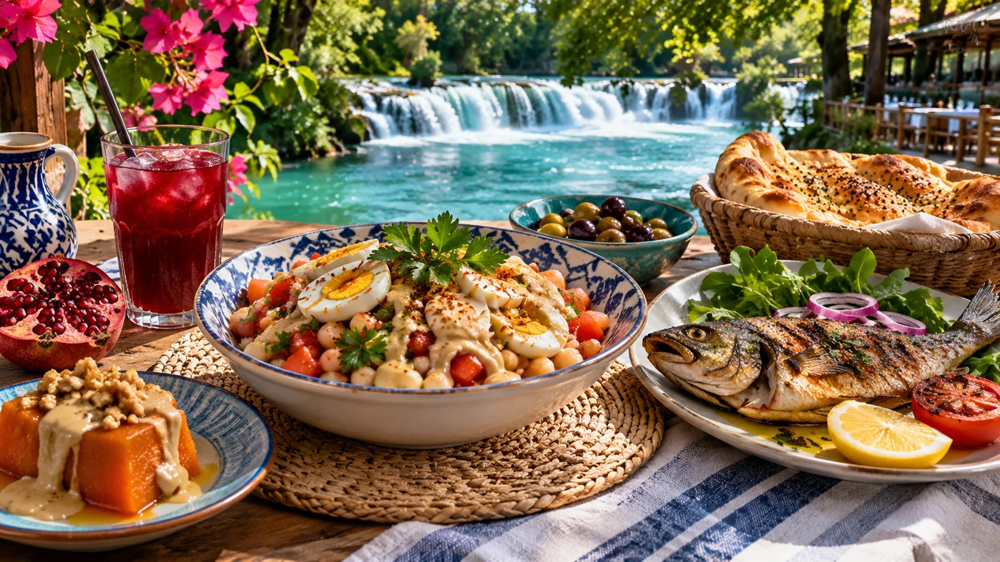

01
WATER
YARIM GÜN · RAHAT TEMPO
Nehir ve şelale
Manavgat Şelalesi ile başla, ardından nehir kıyısında sakin bir mola ver.
Durakları gör ↗Nehirlerin serinliğini, antik kentlerin hikâyesini ve Akdeniz'in güzelliğini tek rehberde keşfedin.
Sana en yakın deneyimi bul. Bir yer seç, detayları incele ve haritada yolunu aç.
Başka bir kelime veya kategori deneyin.

Temsili görselNehir kıyısında mola ver, Side sokaklarında dolaş, yerel işletmeleri keşfet ve Akdeniz gününü acele etmeden yaşa. Menü, fiyat ve işletme bilgilerini ziyaret öncesinde kontrol et.
Keşfe devam et ↗İlham veren kısa rotalar. Ulaşım ve ziyaret koşullarını yola çıkmadan kontrol etmeyi unutma.
Manavgat Şelalesi ile başla, ardından nehir kıyısında sakin bir mola ver.
Durakları gör ↗Antik tiyatroyu, sütunlu yolları ve deniz kıyısındaki tapınakları keşfet.
Durakları gör ↗Köprülü Kanyon ve çevresindeki dağ manzaraları için tam günlük gezi planla.
Durakları gör ↗Yolculuğunu planlarken resmî kaynakları kontrol et; saatler ve ulaşım düzenleri değişebilir.
Manavgat Belediyesi'nin ulaşım sayfası Antalya Havalimanı ile Manavgat arasını yaklaşık 52 km olarak belirtir.
Kaynağı gör ↗Özellikle yaz aylarında su, şapka ve güneş koruması bulundur. Açık hava gezilerini sabah veya akşam saatlerine planla.
Her gezi kartında konumu haritada açabilir, yol tarifini telefonundan alabilirsin.
Rehberdeki tarihî alan, gezi ve ulaşım bilgileri aşağıdaki kurumların yayımladığı içeriklerden derlenmiştir.